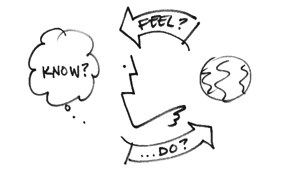

Design decisions and why we made them.
In addition to the technical work required for this project, our team highly valued the design of our game as a holistic experience. We wanted our game to be clear, intuitive, and to tell its own story.
Author/Copyright holder: Bill Verplank. Copyright terms and licence: All rights reserved.Img
{kind=link}
Game play idea
We knew from the beginning that we wanted to make a fun, collaborative game. We came up with the gameplay idea of lights on each side randomly turning on, with both players having the goal of keeping the lights off for as long as possible. The extra challenge and collaboration of the game comes into play, because in order to get the lights on their side to turn off, each player needs to get their partner to push the buttons in the same spots on their side.
The source of the fun is the challenge of the collaboration between the two players. Both are trying to both give and receive information at the same time.
Justification of aesthetic choices

Comparing Button Brightness (blue LED behind white cover vs. red LED behind a red cover)
The simple black and white color scheme gives the game a classic minimalist look. The high contrast emphasized the most important feature-- the button lights. By testing a vareity of LED and button colors, we found that distinguishing between on and off LEDs was easiest with white buttons (though red was a close second).
What parameters were we testing?
We initially used a digital prototype made in Processing to test gameplay with 16 “buttons” on each side before having the fully functional game built. We wanted to focus our tests the following:
- - What was a reasonable number of buttons? 16 (maybe 25).
- - How frequently buttons should light up? Every 3 seconds.
- - What made the game fun? *chaos*
Playtesting Gallery

One way communication on cardboard prototype

Sympathetic button poking

Sue seems engaged
Feedback from playtesting
With these parameters, the game is challenging enough to be fun without the changing the frequency of buttons lighting up. That said, starting out slow and speeding up could make it easier for players to understand the gameplay and develop a cooperative strategy. Using our digital prototype, we heard from initial playtesters that it would be helpful for there to be clearer feedback from the game about whether the right or wrong button had been pressed. This feedback could be visual, auditory, or something else (e.g. tickets receding back into the machine).
Evolution of the game
Before BLACKOUT: We had a few other game ideas before we realized that BLACKOUT was the game we wanted to make. One of these games was a sort of giant bop-it game, where a player has to respond to stimuli instructing them to perform different tasks in the game environment. This game had a few variations thought up, including chef themed, musician themed, and "leaky pipes", the plumber themed version of this game where a player had to turn faucets to prevent water from flooding a tank past a threshold.
BLACKOUT: To address some of the feedback we received, we considered changes to gameplay.
- Button panels that rotate or rise from being horizontal to vertical over the course of the game
- Tickets are awarded for every button pressed correctly.
- Competitive game: whoever turns off all of the lights first wins.
- Competitive game rather than collaborative one: one player is trying to turn lights on and one is trying to turn lights off. (If either player succeeds they win.)